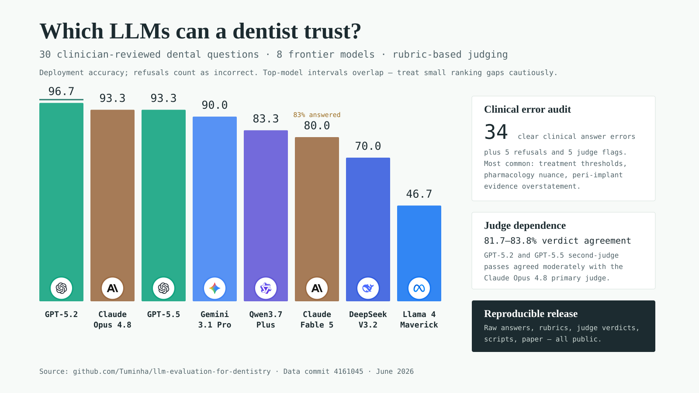

{kind=link}
Takeaway
The useful signal is clinical, not just numerical.
The top frontier systems are close on a 30-question dataset. The more important distinction is where answers fail: thresholds, guideline nuance, overstatement of evidence, refusals, and judge inconsistency.
Interactive leaderboard
Deployment accuracy by model
Domain view
Model performance changes by clinical domain
Question explorer
Inspect the 30 clinical questions
Clinical error analysis
What the wrong answers got wrong
Clear clinical error patterns
Judge consistency flags
These rows were stored as incorrect even though the primary judge marked all criteria satisfied and no violations. They are shown as manual-adjudication candidates, not retroactive corrections.
Judge dependence
Secondary judges expose scoring uncertainty
Shareable visual summary
Infographic generated from the benchmark data

Reproducibility
Source materials, scripts, citation, and license
The repository includes the question dataset, raw JSONL answer transcripts, judge verdict files, plotting scripts, manuscript source, and this report generator.
@misc{teixeirabarbosa_dental_llm_benchmark_2026,
author = {Teixeira Barbosa, Francisco and Robles Cantero, Daniel and Brizuela Velasco, Aritza},
title = {Evaluating Frontier Language Models on Clinician-Reviewed Dental Questions: A Reproducible Benchmark},
year = {2026},
url = {https://github.com/Tuminha/llm-evaluation-for-dentistry}
}